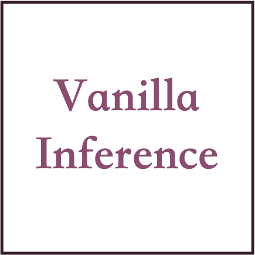

VANILLA INFERENCE: Sure, here is a detailed plan for eating healthy and losing weight:
1. Eat a variety of whole, unprocessed foods: Focus on eating a diet that consists of a variety of whole, unprocessed foods such as fruits, vegetables, whole grains, lean proteins, and healthy fats. Avoid processed and packaged foods that are high in added sugars, unhealthy fats, and sodium.
2. Keep track of your calorie intake: To lose weight, you need to be aware of the number of calories you are consuming. Keep a food diary or use a calorie tracking app to keep track of your daily intake. This will help you make sure you are staying within your calorie goals.
3. Eat plenty of fiber: Fiber is key for weight loss as it helps you feel full and satisfied, and also helps to regulate digestion. Aim for plenty of fiber-rich foods like fruits, vegetables, whole grains, and legumes.
4. Drink plenty of water: Drinking enough water is important for overall health and can also help with weight loss. Aim for at least 8 glasses of water a day.
5. Exercise regularly: Regular physical activity is an important part of a weight loss and overall healthy living. Aim for at least 30 minutes of moderate-intensity exercise per day, such as brisk walking, cycling or swimming.
6. Get enough sleep: Lack of sleep can lead to weight gain and make it harder to stick to a healthy diet and exercise plan. Aim for 7-8 hours of sleep per night.
7. Be mindful of portion sizes: Pay attention to portion sizes, even with healthy foods. Eating too much of even the best foods can still lead to weight gain.
8. Plan ahead: Plan your meals in advance and take healthy snacks with you to work or on the go to avoid reaching for unhealthy snacks.
9. Get professional help: If you need help with weight loss, consider consulting a healthcare professional or a registered dietitian for personalized advice and support.
10. Be patient and consistent: Remember that weight loss takes time and effort. Be patient and consistent with your healthy habits and celebrate your progress along the way.
" />
HIGHLIGHT "EAT HEALTHY": Here is a detailed plan to eat healthy and lose weight:
1. Consult with a healthcare professional: Before starting any weight loss plan, it’s important to consult with a healthcare professional, such as a registered dietitian or doctor, to determine a plan that is safe and appropriate for your individual needs and health status.
2. Set realistic goals: Set realistic and achievable weight loss goals and make sure to track your progress. Losing 1-2 pounds per week is a healthy and sustainable goal.
3. Eat a balanced diet: Focus on eating a balanced diet that includes a variety of fruits, vegetables, whole grains, lean proteins, and healthy fats. Avoid processed and high-calorie foods.4. Keep track of what you eat: Keep track of what you eat by using a food diary or a mobile app to track your daily food intake. This can help you stay on track and make changes to your diet as needed.
5. Drink plenty of water: Drink at least 8 glasses of water a day to stay hydrated and help with weight loss.
6. Exercise regularly: Regular physical activity is important for weight loss and overall health. Aim for at least 30 minutes of moderate-intensity exercise, such as brisk walking or cycling, most days of the week.
7. Get enough sleep: Getting enough sleep is important for overall health and can also help with weight loss. Aim for 7-8 hours of sleep per night.
8. Be mindful of portion sizes: Pay attention to portion sizes and control your portion sizes, especially when eating out or eating at home.
9. Have healthy snacks: Have healthy snacks on hand such as fruits, vegetables, and nuts, instead of reaching for unhealthy snacks.
10. Stay active: Try to find ways to stay active throughout the day, such as taking the stairs instead of the elevator, or parking farther away from your destination.
11. Monitor your progress: Weigh yourself regularly, but don't weigh yourself too often. It's important to remember that weight loss is not always a linear process and it can be affected by many factors such as water weight, muscle gain, and other factors.
12. Be consistent: Consistency is key to weight loss. Try to stick to your plan as closely as possible and make changes gradually.
It's important to remember that weight loss is a journey and it's not always easy, but with a well-rounded plan and a positive attitude, you can achieve your goals.
" />
HIGHLIGHT "LOSE WEIGHT": Sure, here is a detailed plan for eating healthy and losing weight:
1. Start by consulting with a healthcare professional: Before making any significant changes to your diet and exercise routine, it's important to consult with a doctor or a registered dietitian to ensure that any dietary changes are safe and appropriate for your individual health needs.
2. Plan your meals in advance: Plan out your meals for the week, making sure to include a variety of healthy, nutrient-dense foods such as lean proteins, whole grains, fruits, and vegetables.
3. Focus on whole, unprocessed foods: Try to limit your consumption of processed and packaged foods, which are often high in added sugars, sodium, and unhealthy fats. Instead, opt for whole, unprocessed foods such as whole grains, fruits, vegetables, lean proteins, and healthy fats.
4. Incorporate plenty of fiber: Fiber is key for maintaining a healthy digestive system and can also help you feel full and satisfied, making it easier to stick to a calorie-controlled diet. Aim for plenty of fiber-rich foods like fruits, vegetables, whole grains, and legumes.
5. Drink plenty of water: Staying hydrated is important for overall health and can also help you feel full, making it easier to stick to your calorie goals. Aim for at least 8 glasses of water a day.
6. Limit your portion sizes: Pay attention to portion sizes and control the amount of food you eat at each meal. Use smaller plates and bowls to help you control your portion sizes.
7. Incorporate physical activity: Regular physical activity can help you burn calories and build muscle, which can boost your metabolism and help you lose weight. Aim for at least 30 minutes of moderate-intensity exercise most days of the week.
8. Be mindful of your snacks: Snacking can be a great way to keep your energy up and keep your metabolism going throughout the day, but it's important to choose healthy snacks like fruits, vegetables, and nuts.
9. Keep track of your progress: Keep track of your food intake and physical activity to help you stay on track and make adjustments as needed.
10. Be patient: Losing weight and eating healthy is a process and it takes time. Be patient and don't be too hard on yourself if you don't see results right away. Remember to be consistent and stick to your plan.
"
/>
User: Please give me a detailed plan to eat healthy and to lose weight.


 Prompt Highlighter: Interactive Control for
Prompt Highlighter: Interactive Control for